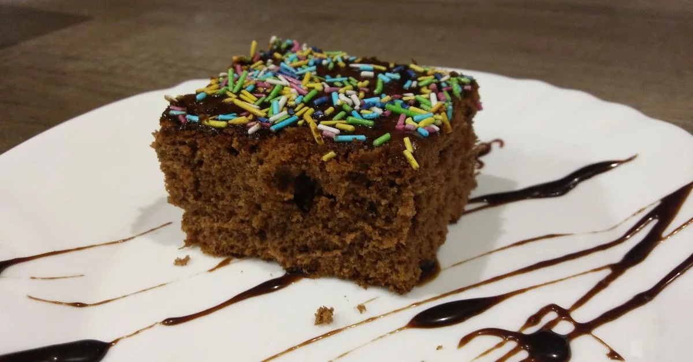
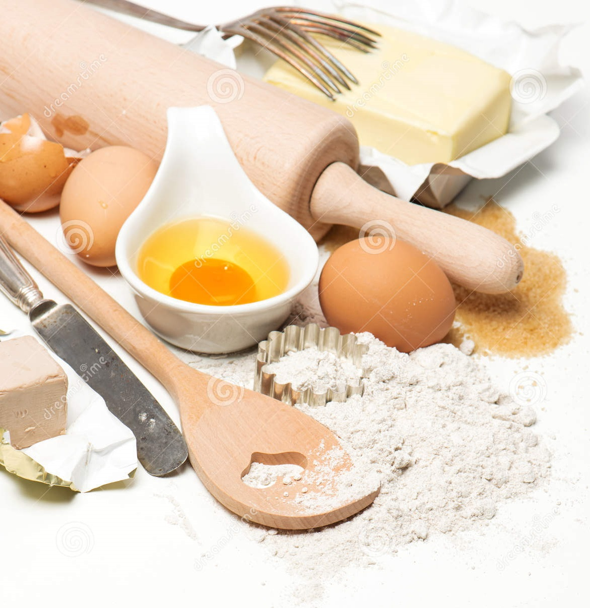

Klasyczny przepis na ciasto murzynek. To pyszne, proste i szybkie do przygotowania, kakaowe ciasto. Murzynek z
tego przepisu jest wilgotny, puszysty, delikatny i rozpływający się w ustach.

Składniki:
- ½ szklanki mleka lub wody (125ml)
- 3 kopiaste łyżki kakao
- 1,5 szklanki cukru (300g)
- 250g masła lub margaryny
- 4 jajka
- 1,5 szklanki mąki pszennej (225g)
- 2 łyżeczki proszku do pieczenia

Sposób przygotowania
- Mleko (lub wodę), kakao i cukier przełożyć do garnka i mieszając, zagotować. Do gorącej masy dodać
masło i mieszać , aż się rozpuści. Pozostawić do ostygnięcia.
- Mąkę wymieszać z proszkiem do pieczenia. Odstawić na bok.
- Jajka sparzyć wrzątkiem. Oddzielić żółtka od białek. Białka ubić na sztywną pianę. Odstawić na bok.
Żółtka wmieszać do ostygniętej masy, trzepaczką lub mikserem. Odlać pół szklanki masy. Ostawić na bok.
(Będzie to polewa). Trzepaczką (lub mikserem) wmieszać mąkę z proszkiem. Na końcu wmieszać delikatnie
szpatułką pianę z białek.
- Dno tortownicy o średnicy 26cm wyłożyć papierem do pieczenia, a następnie zacisnąć obręcz. Ciasto
przełożyć do formy.
- Piec w nagrzanym piekarniku ok. 45 minut, do suchego patyczka, w temperaturze 180°C, grzałka góra- dół.
Pozostawić do ostygnięcia.
- Ciasto polać odłożoną polewą. (Gdyby polewa była za rzadka, należy włożyć ją na chwilę do lodówki, aż
lekko zgęstnieje).